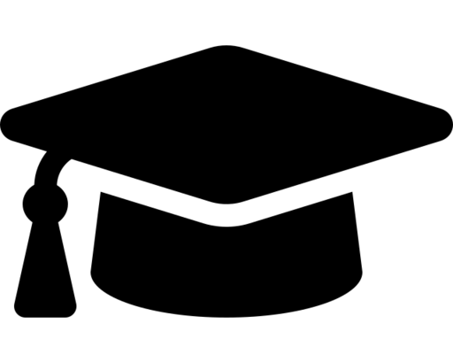

Datos Personales
Fecha de nacimiento: 24/12/2004 (18 años)
Correo: fernandezmariano307@gmail.com
Telefono: +54 2612534642
Direccion: Luis Braile 6324, Guaymallen, Mendoza, Argentina

Estudios
Título: Bachiller en artes audiovisuales, con especialidad en Realización Audiovisual
Año: 2018-2022
Institución: Escuela Nº 4-166 Fernando Lorenzo, Maipú, Mendoza, Argentina

Conocimientos
Curso: Aprende a programar y crea tus programas desde cero
Fecha: 8 de enero de 2021
Institución: Udemy
Curso: Programación (nivel intermedio) para programadores novatos
Fecha: 18 de enero de 2022
Institución: Udemy
Curso: Aprende a crear tu web desde cero con HTML y CSS
Fecha: 19 de marzo de 2022
Institución: Udemy
Curso: Iniciación a la programación con JavaScript
Fecha: 10 de julio de 2022
Institución: Udemy
Idiomas: Inglés (nivel medio), francés (nivel básico)